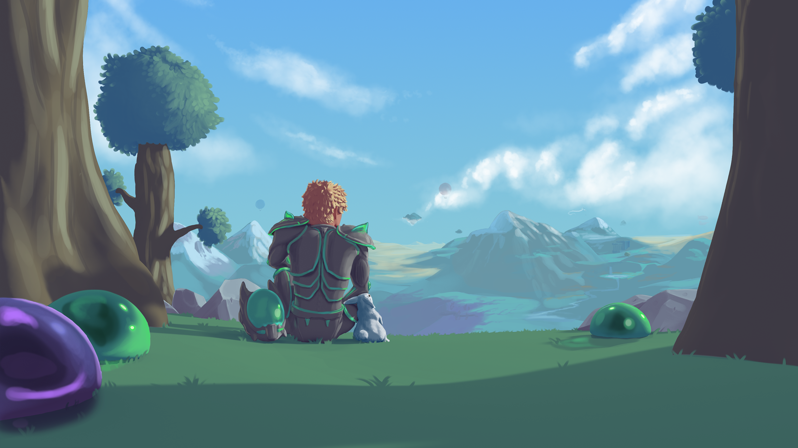

Terraria: o jogo está cada vez melhor, a atualização do Journey's End agora está no ar para Xbox e PlayStation (2021)
 Um jogo de aventura que mistura magia, combate físico e faz com que você se torne um construtor, crie abrigos e saia em busca de minérios. Parece Minecraft, mas estamos falando de Terraria. No dia 16 de maio de 2020, o studio Re-Logic liberou a atualização 1.4, chamada “Journey’s End.” e agora em outubro, Chegou para Xbox e PlayStation. Confira o trailer da atualização de Terraria: Alguns fãs entenderam que “Journey’s End” seria última atualização do jogo, enquanto que outros acreditam que pequenos updates ainda serão promovidos pela desenvolvedora em breve. Não fique triste, pois ainda é possível jogar/criar mods para o jogo através do tmod. Na atualização anterior, a 1.3, os jogadores foram apresentados ao Modo Expert. Agora, temos o Master Mode, que aumentou o dano de todos os inimigos, fazendo com que o jogador tenha que explorar todo seu bioma atrás de armas e encantamentos antes de encarar um novo desafio.
E você, já jogou Terraria “Journey’s End”?